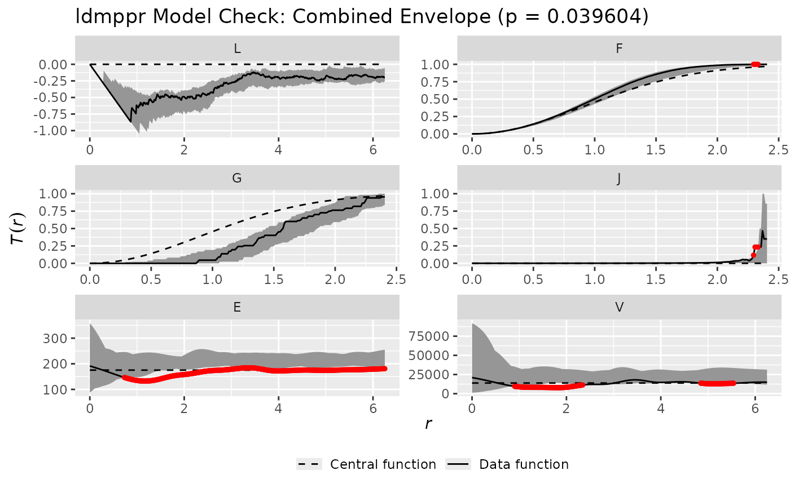

Check the fit of an estimated model using global envelope tests
Source:R/check_model_fit.R
check_model_fit.RdPerforms global envelope tests for nonparametric L, F, G, J, E, and V summary
functions (spatstat/GET).
These tests assess goodness-of-fit of the estimated model relative to a reference marked point pattern.
The reference marked point pattern can be supplied directly via reference_data (a marked ppp object),
or derived internally from a ldmppr_fit object.
Usage
check_model_fit(
reference_data = NULL,
t_min = 0,
t_max = 1,
process = c("self_correcting"),
process_fit = NULL,
anchor_point = NULL,
raster_list = NULL,
scaled_rasters = FALSE,
mark_model = NULL,
xy_bounds = NULL,
include_comp_inds = FALSE,
thinning = TRUE,
edge_correction = "none",
competition_radius = 15,
n_sim = 2500,
save_sims = TRUE,
verbose = TRUE,
seed = 0,
parallel = FALSE,
num_cores = max(1L, parallel::detectCores() - 1L),
set_future_plan = FALSE
)Arguments
- reference_data
(optional) a marked
pppobject for the reference dataset. IfNULL, the reference pattern is derived fromprocess_fitwhenprocess_fitis anldmppr_fitand containsdata_original(preferred) ordatawith columns(x,y,size).- t_min
minimum value for time.
- t_max
maximum value for time.
- process
type of process used (currently supports
"self_correcting").- process_fit
either an
ldmppr_fitobject (fromestimate_process_parameters) or a numeric vector of length 8 giving the process parameters.- anchor_point
(optional) vector of (x,y) coordinates of the point to condition on. If
NULL, inferred from the reference data (largest mark if available) or fromldmppr_fit.- raster_list
a list of raster objects used for predicting marks.
- scaled_rasters
TRUEorFALSEindicating whether the rasters have already been scaled.- mark_model
a mark model object. May be a
ldmppr_mark_modelor a legacy model.- xy_bounds
(optional) vector of bounds as
c(a_x, b_x, a_y, b_y). IfNULL, will be inferred fromreference_data's window whenreference_datais provided, otherwise fromldmppr_fitwith lower bounds assumed to be 0.- include_comp_inds
TRUEorFALSEindicating whether to compute competition indices.- thinning
TRUEorFALSEindicating whether to use the thinned simulated values.- edge_correction
type of edge correction to apply (
"none"or"toroidal").- competition_radius
distance for competition radius if
include_comp_inds = TRUE.- n_sim
number of simulated datasets to generate.
- save_sims
TRUEorFALSEindicating whether to save and return the simulated metrics.- verbose
TRUEorFALSEindicating whether to show progress of model checking. WhenTRUE, progress is reported via progressr (if available) and is compatible with parallel execution.- seed
integer seed for reproducibility.
- parallel
TRUEorFALSE. IfTRUE, simulations are run in parallel via furrr/future.- num_cores
number of workers to use when
parallel=TRUE. Defaults to one fewer than the number of detected cores.- set_future_plan
TRUEorFALSE. IfTRUEandparallel=TRUE, set a local future plan internally (default behavior usesmultisession).
Details
This function relies on the spatstat package for the calculation of the point pattern metrics
and the GET package for the global envelope tests. The L, F, G, J, E, and V functions are a collection of
non-parametric summary statistics that describe the spatial distribution of points and marks in a point pattern.
See the documentation for Lest(), Fest(), Gest(),
Jest(), Emark(), and Vmark() for more information.
Also, see the global_envelope_test() function for more information on the global envelope tests.
References
Baddeley, A., Rubak, E., & Turner, R. (2015). *Spatial Point Patterns: Methodology and Applications with R*. Chapman and Hall/CRC Press, London. ISBN 9781482210200. Available at: https://www.routledge.com/Spatial-Point-Patterns-Methodology-and-Applications-with-R/Baddeley-Rubak-Turner/p/book/9781482210200.
Myllymäki, M., & Mrkvička, T. (2023). GET: Global envelopes in R. arXiv:1911.06583 [stat.ME]. doi:10.48550/arXiv.1911.06583 .
Examples
# Note: The example below is provided for illustrative purposes and may take some time to run.
# \donttest{
data(small_example_data)
file_path <- system.file("extdata", "example_mark_model.rds", package = "ldmppr")
mark_model <- load_mark_model(file_path)
raster_paths <- list.files(system.file("extdata", package = "ldmppr"),
pattern = "\\.tif$", full.names = TRUE)
raster_paths <- raster_paths[!grepl("_med\\.tif$", raster_paths)]
rasters <- lapply(raster_paths, terra::rast)
scaled_raster_list <- scale_rasters(rasters)
reference_data <- generate_mpp(
locations = small_example_data[, c("x", "y")],
marks = small_example_data$size,
xy_bounds = c(0, 25, 0, 25)
)
#> Registered S3 method overwritten by 'spatstat.geom':
#> method from
#> print.metric yardstick
estimated_parameters <- c(
0.05167978, 8.20702166, 0.02199940, 2.63236890,
1.82729512, 0.65330061, 0.86666748, 0.04681878
)
# NOTE: examples are run by CRAN with --run-donttest; keep parallel=FALSE here.
example_model_fit <- check_model_fit(
reference_data = reference_data,
t_min = 0,
t_max = 1,
process = "self_correcting",
process_fit = estimated_parameters,
raster_list = scaled_raster_list,
scaled_rasters = TRUE,
mark_model = mark_model,
xy_bounds = c(0, 25, 0, 25),
include_comp_inds = TRUE,
thinning = TRUE,
edge_correction = "none",
competition_radius = 10,
n_sim = 100,
save_sims = FALSE,
verbose = TRUE,
seed = 90210,
parallel = FALSE
)
plot(example_model_fit, which = 'combined')
#> Warning: `aes_string()` was deprecated in ggplot2 3.0.0.
#> ℹ Please use tidy evaluation idioms with `aes()`.
#> ℹ See also `vignette("ggplot2-in-packages")` for more information.
#> ℹ The deprecated feature was likely used in the GET package.
#> Please report the issue at <https://github.com/myllym/GET/issues>.
#> Warning: `aes_()` was deprecated in ggplot2 3.0.0.
#> ℹ Please use tidy evaluation idioms with `aes()`
#> ℹ The deprecated feature was likely used in the GET package.
#> Please report the issue at <https://github.com/myllym/GET/issues>.

# }